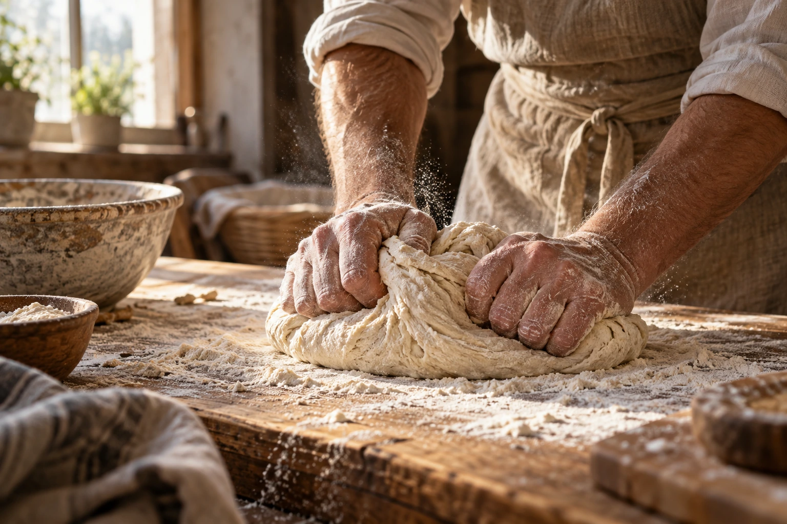

Хит
Воздушный и сливочный · 70 г
150 ₽

Хрустящая корочка, нежный мякиш и маленькие поводы улыбнуться. С любовью — каждый день.
Воздушный и сливочный · 70 г
Миндальный крем · 90 г
Тёплая пряная классика · 100 г
Свежие ягоды · 120 г
На закваске · 450 г
Заварной крем · 80 г
Хрустящая корочка · 500 г
Ваниль и лесные ягоды · 1 кг
Осенние специи · 100 г
Хлеб, яйца, свежие овощи
Ничего не найдено. Попробуйте другую категорию или название.

Мы верим, что настоящий хлеб объединяет людей. Поэтому каждый день в этой вымышленной пекарне начинается с простых вещей: хорошего зерна, терпения и любви к своему делу.
Выбираем муку и хорошие ингредиенты
Даём времени сделать своё дело
Румяная корочка, мягкий центр
Свежесть для простых радостей
Ароматный кофе, свежий хлеб и время, которое принадлежит только вам.

«Нравится эта тёплая палитра — сразу представляешь утро с хлебом и кофе.»
«Удобный каталог и очень аппетитная подборка. Круассаны выглядят прекрасно.»
«Конструктор торта помогает наглядно представить будущий праздник.»
В концепции пекарня открыта ежедневно с 08:00 до 21:00. Это вымышленный адрес и режим работы.
Корзина показывает пример заказа с доставкой или самовывозом. Реальной доставки нет.
Да, попробуйте демонстрационный конструктор торта: выберите вес, начинку и опишите оформление.
Карточки показывают пример состава. Перед реальной покупкой всегда уточняйте состав и аллергены у производителя.